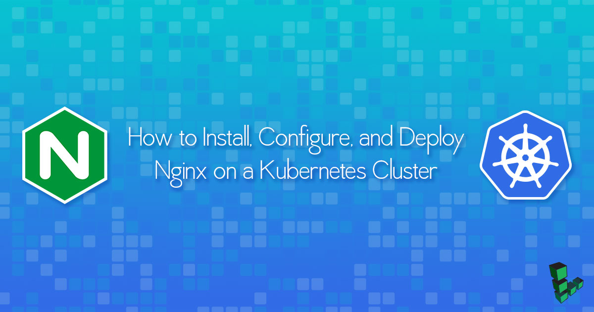

How to Install, Configure, and Deploy NGINX on a Kubernetes Cluster
Updated by Linode Contributed by Kiran Singh
DeprecatedThis guide has been deprecated and is no longer being maintained.Please refer to the updated version of this guide.

What is Kubernetes?
Kubernetes is an open-source container management system that is based on Google Borg. It can be configured to provide highly available, horizontally autoscaling, automated deployments. This guide shows you how to manually set up a Kubernetes cluster on a Linode and manage the lifecycle of an NGINX service.
NoteYou can now create a Kubernetes cluster with one command using the Linode CLI. To provision Kubernetes on Linodes, this tool uses the Linode Kubernetes Terraform module, the Linode Cloud Controller Manager (CCM), and the Container Storage Interface (CSI) Driver for Linode Block Storage. See the Kubernetes Tools page for installation steps. For an in-depth dive into the the Linode Kubernetes Terraform module, see its related Community Site post.
Before You Begin
You will need:
- Two or more Linodes with Private IPs
- Each Linode should have a 64-bit distribution of either:
- Ubuntu 16.04+
- Debian 9
- CentOS 7
- RHEL 7
- Fedora 26
- At least 2GB RAM per Linode
- Root or sudo privileges to install and configure Kubernetes. Any user can interact with the cluster once it’s configured.
Prepare the Host Linode for Kubernetes
The steps in this guide create a two-node cluster. Evaluate your own resource requirements and launch an appropriately-sized cluster for your needs.
Create two Linodes with at least 2GB memory within the same data center.
For each node, go into the Remote Access tab of your Linode Manager and add a private IP. It is possible to build a Kubernetes cluster using public IPs between data centers, but performance and security may suffer.
Configure a firewall with UFW or iptables to ensure only the two nodes can communicate with each other.
When configuring your firewall, a good place to start is to create rules for the ports Kubernetes requires to function. This includes any inbound traffic on Master nodes and their required ports. If you have changed any custom ports, you should ensure those ports are also open. Master Nodes will have a public IP address or
192.168.0.0/16. See the chart below for more details.On Worker nodes, you should allow inbound Kubelet traffic. For NodePort traffic you should allow a large range from the world or if you are using the Linode NodeBalancers service exclusively for ingress,
192.168.255.0/24. See the chart below for more details.The table below provides a list of the required ports for Master nodes and Worker nodes. You should also include port
22.Master nodes
Protocol Direction Port Range Purpose Used By TCP Inbound 6443* Kubernetes API server All TCP Inbound 2379-2380 etcd server client API kube-apiserver, etcd TCP Inbound 10250 Kubelet API Self, Control plane TCP Inbound 10251 kube-scheduler Self TCP Inbound 10253 kube-controller-manager Self Worker nodes
Protocol Direction Port Range Purpose Used By TCP Inbound 10250 Kubelet API Self, Control plane TCP Inbound 30000-32767 NodePort Services** All Note
By design, kube-proxy will always place its iptables chains first. It inserts 2 rules, KUBE-EXTERNAL-SERVICES and KUBE-FIREWALL at the top of the INPUT chain. See the Kubernetes discussion forum for more details.You should consider using the Linode NodeBalancer service with the Linode Cloud Controller Manager (CCM).
- When using Linode NodeBalancers ensure you add iptables rules to allow the NodeBalancer traffic:
192.168.255.0/24.
- When using Linode NodeBalancers ensure you add iptables rules to allow the NodeBalancer traffic:
To obtain persistent storage capabilities, you can use the Container Storage Interface (CSI) Driver for Linode Block Storage.
Disable Swap Memory
Linodes come with swap memory enabled by default. kubelets do not support swap memory and will not work if swap is active or even present in your /etc/fstab file.
The /etc/fstab should look something like this:
- /etc/fstab
-
1 2 3 4 5 6 7 8 9 10# /etc/fstab: static file system information. # # use 'blkid' to print the universally unique identifier for a # device; this may be used with uuid= as a more robust way to name devices # that works even if disks are added and removed. see fstab(5). # # <file system> <mount point> <type> <options> <dump> <pass> # / was on /dev/sda1 during installation /dev/sda / ext4 noatime,errors=remount-ro 0 1 /dev/sdb none swap sw 0 0
Delete the line describing the swap partition. In this example, Line 10 with
/dev/sdb.Disable swap memory usage:
swapoff -a
Set Hostnames for Kubernetes Nodes
To make the commands in this guide easier to understand, set up your hostname and hosts files on each of your machines.
Choose a node to designate as your Kubernetes master node and SSH into it.
Edit
/etc/hostname, and add:- /etc/hostname
-
1kube-master
Add the following lines to
/etc/hosts:- /etc/hosts
-
1 2<kube-master-private-ip> kube-master <kube-worker-private-ip> kube-worker-1
If you have more than two nodes, add their private IPs to
/etc/hostsas well.To make it easier to understand output and debug issues later, consider naming each hostname according to its role (
kube-worker-1,kube-worker-2, etc.).Perform Steps 2 and 3 on each worker node, changing the values accordingly.
For the changes to take effect, restart your Linodes.
Confirm Hostnames
Once your nodes have rebooted, log into each to confirm your changes.
Check that:
$ hostnamein the terminal outputs the expected hostname.- You can ping all of the nodes in your cluster by their hostnames.
- Swap is correctly disabled on all nodes using
cat /proc/swaps.
If you are unable to ping any of your hosts by their hostnames or private IPs:
SSH into the host that isn’t responding.
Enter
ifconfig. You should see an entry foreth0:1that lists your private IP. Ifeth0:1isn’t listed, it’s possible that you deployed your Linode image before adding a private IP to the underlying host. Recreate the image and return to the beginning of the guide.
Install Docker and Kubernetes on Linode
Debian/Ubuntu:
apt install ebtables ethtool
CentOS/RHEL:
yum install ebtables ethtool
Install Docker
These steps install Docker Community Edition (CE) using the official Ubuntu repositories. To install on another distribution, see the official installation page.
Remove any older installations of Docker that may be on your system:
sudo apt remove docker docker-engine docker.ioMake sure you have the necessary packages to allow the use of Docker’s repository:
sudo apt install apt-transport-https ca-certificates curl software-properties-commonAdd Docker’s GPG key:
curl -fsSL https://download.docker.com/linux/ubuntu/gpg | sudo apt-key add -Verify the fingerprint of the GPG key:
sudo apt-key fingerprint 0EBFCD88You should see output similar to the following:
pub 4096R/0EBFCD88 2017-02-22 Key fingerprint = 9DC8 5822 9FC7 DD38 854A E2D8 8D81 803C 0EBF CD88 uid Docker Release (CE deb)Add the
stableDocker repository:sudo add-apt-repository "deb [arch=amd64] https://download.docker.com/linux/ubuntu $(lsb_release -cs) stable"Update your package index and install Docker CE:
sudo apt update sudo apt install docker-ceAdd your limited Linux user account to the
dockergroup:sudo usermod -aG docker $USERNote
After entering theusermodcommand, you will need to close your SSH session and open a new one for this change to take effect.Check that the installation was successful by running the built-in “Hello World” program:
docker run hello-world
Install kubeadm, kubectl, and kubelet
Debian/Ubuntu:
curl -s https://packages.cloud.google.com/apt/doc/apt-key.gpg | sudo apt-key add -
echo 'deb http://apt.kubernetes.io/ kubernetes-xenial main' | sudo tee /etc/apt/sources.list.d/kubernetes.list
sudo apt update
sudo apt install -y kubelet kubeadm kubectl
CentOS/RHEL:
cat <<eof > /etc/yum.repos.d/kubernetes.repo
[kubernetes]
name=kubernetes
baseurl=https://packages.cloud.google.com/yum/repos/kubernetes-el7-x86_64
enabled=1
gpgcheck=1
repo_gpgcheck=1
gpgkey=https://packages.cloud.google.com/yum/doc/yum-key.gpg
https://packages.cloud.google.com/yum/doc/rpm-package-key.gpg
eof
setenforce 0
yum install -y kubelet kubeadm kubectl
systemctl enable kubelet && systemctl start kubelet
Kubernetes Master and Slave
Configure the Kubernetes Master Node
On the master node initialize your cluster using its private IP:
kubeadm init --pod-network-cidr=192.168.0.0/16 --apiserver-advertise-address=<private IP>If you encounter a warning stating that swap is enabled, return to the Disable Swap Memory section.
If successful, your output will resemble:
To start using your cluster, you need to run (as a regular user): mkdir -p $HOME/.kube sudo cp -i /etc/kubernetes/admin.conf $HOME/.kube/config sudo chown $(id -u):$(id -g) $HOME/.kube/config You should now deploy a pod network to the cluster. Run "kubectl apply -f [podnetwork].yaml" with one of the options listed at: http://kubernetes.io/docs/admin/addons/ You can now join any number of machines by running the following on each node as root: kubeadm join --token 921e92.d4582205da623812:6443 --discovery-token-ca-cert-hash sha256:bd85666b6a97072709b210ddf677245b4d79dab88d61b4a521fc00b0fbcc710c On the master node, configure the
kubectltool:mkdir -p $HOME/.kube sudo cp -i /etc/kubernetes/admin.conf $HOME/.kube/config sudo chown $(id -u):$(id -g) $HOME/.kube/configCheck on the status of the nodes with
kubectl get nodes. Output will resemble:root@kube-master:~# kubectl get nodes name status roles age version kube-master NotReady master 1m v1.8.1The master node is listed as
NotReadybecause the cluster does not have a Container Networking Interface (CNI). CNI is a spec for a of container based network interface. In this guide, we will be using Calico. Alternatively, you can use Flannel or another CNI for similar results.The
--pod-network-cidrargument used in the Configure the Kubernetes Master Node section defines the network range for the CNI.While still on the master node run the following command to deploy the CNI to your cluster:
kubectl apply -f https://docs.projectcalico.org/v2.6/getting-started/kubernetes/installation/hosted/kubeadm/1.6/calico.yamlTo ensure Calico was set up correctly, use
kubectl get pods --all-namespacesto view the pods created in thekube-systemnamespace:root@kube-master:~# kubectl get pods --all-namespaces NAMESPACE NAME READY STATUS RESTARTS AGE kube-system calico-etcd-nmx26 1/1 Running 0 48s kube-system calico-kube-controllers-6ff88bf6d4-p25cw 1/1 Running 0 47s kube-system calico-node-bldzb 1/2 CrashLoopBackOff 2 48s kube-system calico-node-k5c9m 2/2 Running 0 48s kube-system etcd-master 1/1 Running 0 3m kube-system kube-apiserver-master 1/1 Running 0 3m kube-system kube-controller-manager-master 1/1 Running 0 3m kube-system kube-dns-545bc4bfd4-g8xtm 3/3 Running 0 4m kube-system kube-proxy-sw562 1/1 Running 0 4m kube-system kube-proxy-x6psn 1/1 Running 0 1m kube-system kube-scheduler-master 1/1 Running 0 3mThis command uses the
-nflag. The-nflag is a global kubectl flag that selects a non-default namespace. We can see our existing name spaces by runningkubectl get namespaces:root@kube-master:~# kubectl get namespaces NAME STATUS AGE default Active 4h kube-public Active 4h kube-system Active 4hRun
kubectl get nodesagain to see that the master node is now running properly:root@kube-master:~# kubectl get nodes name status roles age version kube-master Ready master 12m v1.8.1
Add Nodes to the Kubernetes Cluster
Run
kubeadm joinwith thekube-masterhostname to add the first worker:kubeadm join --token <some-token> kube-master:6443 --discovery-token-ca-cert-hash sha256:<some-sha256-hash>On the master node, use
kubectlto see that the slave node is now ready:root@kube-master:~# kubectl get nodes name status roles age version kube-master ready master 37m v1.8.1 kube-worker-1 ready2m v1.8.1
Deploy NGINX on the Kubernetes Cluster
A deployment is a logical reference to a pod or pods and their configurations.
From your master node
kubectl createan nginx deployment:kubectl create deployment nginx --image=nginxThis creates a deployment called
nginx.kubectl get deploymentslists all available deployments:kubectl get deploymentsUse
kubectl describe deployment nginxto view more information:Name: nginx Namespace: default CreationTimestamp: Sun, 15 Oct 2017 06:10:50 +0000 Labels: app=nginx Annotations: deployment.kubernetes.io/revision=1 Selector: app=nginx Replicas: 1 desired | 1 updated | 1 total | 1 available | 0 unavailable StrategyType: RollingUpdate MinReadySeconds: 0 RollingUpdateStrategy: 1 max unavailable, 1 max surge Pod Template: Labels: app=nginx Containers: nginx: Image: nginx Port:Environment: Mounts: Volumes: Conditions: Type Status Reason ---- ------ ------ Available True MinimumReplicasAvailable OldReplicaSets: NewReplicaSet: nginx-68fcbc9696 (1/1 replicas created) Events: Type Reason Age From Message ---- ------ ---- ---- ------- Normal ScalingReplicaSet 1m deployment-controller Scaled up replica set nginx-68fcbc9696 to 1 The
describecommand allows you to interrogate different kubernetes resources such as pods, deployments, and services at a deeper level. The output above indicates that there is a deployment callednginxwithin the default namespace. This deployment has a single replicate, and is running the docker imagenginx. The ports, mounts, volumes and environmental variable are all unset.Make the NGINX container accessible via the internet:
kubectl create service nodeport nginx --tcp=80:80This creates a public facing service on the host for the NGINX deployment. Because this is a nodeport deployment, kubernetes will assign this service a port on the host machine in the
32000+ range.Try to
getthe current services:root@kube-master:~# kubectl get svc NAME TYPE CLUSTER-IP EXTERNAL-IP PORT(S) AGE kubernetes ClusterIP 10.96.0.1 <none> 443/TCP 5h nginx NodePort 10.98.24.29 <none> 80:32555/TCP 52sVerify that the NGINX deployment is successful by using
curlon the slave node:root@kube-master:~# curl kube-worker-1:32555The output will show the unrendered “Welcome to nginx!” page HTML.
To remove the deployment, use
kubectl delete deployment:root@kube-master:~# kubectl delete deployment nginx deployment "nginx" deleted root@kube-master:~# kubectl get deployments No resources found.
More Information
You may wish to consult the following resources for additional information on this topic. While these are provided in the hope that they will be useful, please note that we cannot vouch for the accuracy or timeliness of externally hosted materials.
Join our Community
Find answers, ask questions, and help others.
This guide is published under a CC BY-ND 4.0 license.